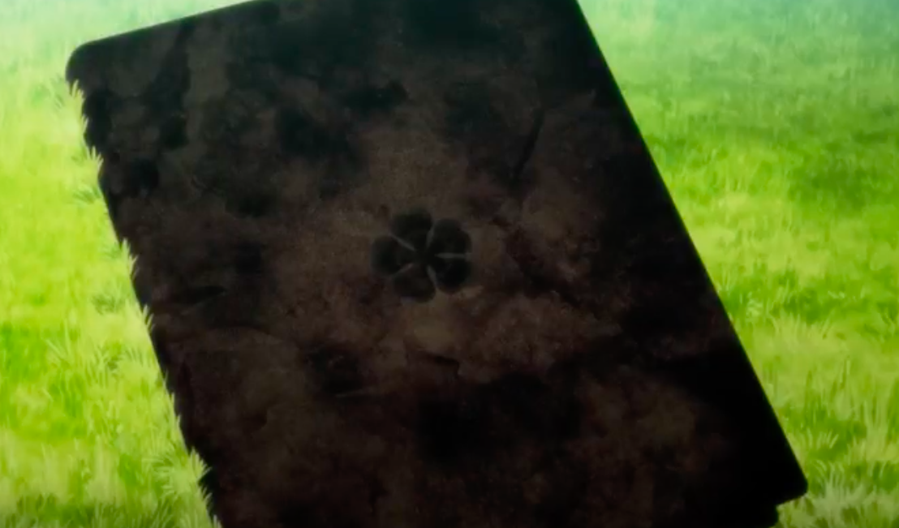
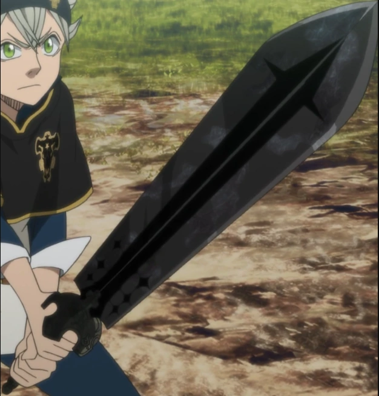
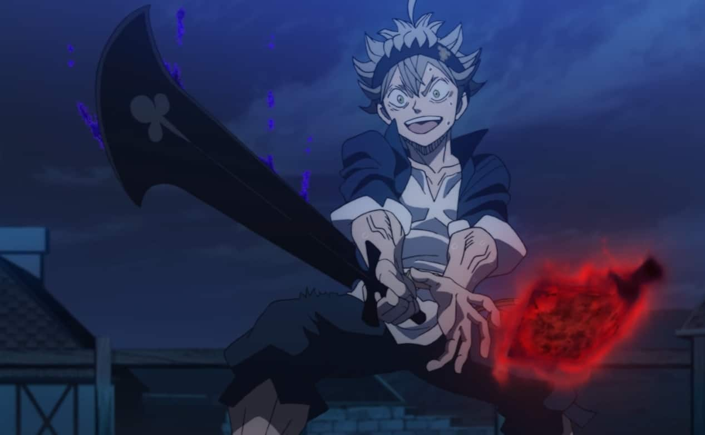
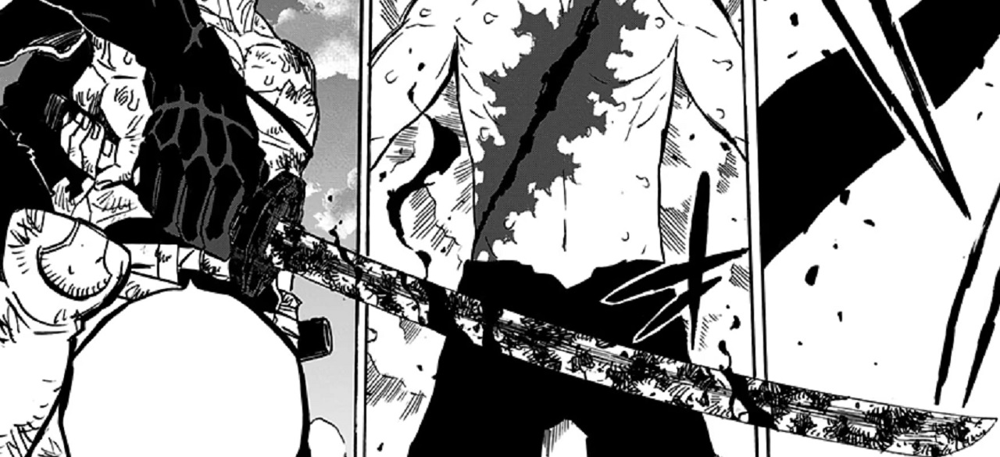

Asta possui um grimório de trevo de cinco folhas, que ele recebe durante sua luta contra Revchi, enquanto defendia Yuno.
O grimório é esfarrapado e coberto de sujeira, uma insígnia preta de trevo de cinco folhas no centro da sua capa frontal.
Esta forma de energia permite ao usuário anular outras formas de magia. Para usá-lo para todo seu potencial, espadas especiais são necessárias, que são armazenadas dentro do grimório do trevo de 5 folhas.
A Anti Magia naturalmente se opõe a qualquer mana e magia, então apenas alguém sem qualquer poder mágico pode usá-lo.
No entanto, sua propriedade de anulação mágica foi adicionada a outros tipos de magia através de circunstâncias especiais.
Asta também demonstrou a capacidade de cortar não apenas magia, mas também seres baseados em mana, como no caso dos quatro grandes espíritos.

A Espada Matadora de Demônios é a primeira das espadas de Asta a aparecer em Black Clover.
Ela pode ser invocada sem gasto de poder mágico.
Esta espada tem forma de uma Espada Bastarda coberta de sujeira e marcas de uso.
Apesar de ser uma espada grande e ser usada principalmente para ataques de contusão, o fio dela consegue cortar seus adversários.
Assim como as outras espadas de Asta, ela possui poder de anti-magia nela, e pode remover qualquer encantamento de um corpo ao se bater com a guarda dela na testa da pessoa.
Após o Timeskip de Black Clover, Asta consegue voar subindo em cima desta espada e fazendo uso de sua anti-magia para mantê-la no ar. Esta técnica também o permite controlar a espada e usá-la para ataques à distância.

A Espada Habitadora de demônios é a segunda das espadas de Asta a aparecer em Black Clover. Ela aparece pela primeira vez durante o arco da Dungeon, na luta entre Asta e Mars, e permite que o cavaleiro mágico use seus ataques mais rapidamente por ser menos pesada do que a Espada Matadora de Demônios. A Espada Habitadora de Demônios consegue absorver magia de diferentes elementos mágicos, e após uma certa quantidade absorvida, ela começa a brilhar. Após isto acontecer, o usuário dela consegue usar este elemento na espada.
Além disso, ela também pode absorver anti-magia e disparar ataques deste atributo. O fio dela funciona apenas contra habilidades e usuários de magia. Caso Asta tente usar esta espada para cortar qualquer objeto, o fio dela desaparece. Esta espada absorve passivamente a magia que se encontra no recinto, incluindo a do seu usuário. Dessa forma, esta é mais uma das espadas de anti-magia de Asta que só pode ser usada por ele e por outras pessoas sem nenhuma magia.
A Espada Destruidora de Demônios é a terceira das espadas de Asta a aparecer em Black Clover. Esta espada apareceu pela primeira vez na luta entre Asta e Yuno contra Licht. Antes dele encostar nela, a espada parecia completamente cheia de sujeira. Após isso, ela se revelou ser uma espada brilhante. Esta espada conta com uma habilidade chamada “Destruidora de Casualidade” que remove causa e efeitos de magias. Além disso, ela também emana tentáculos de anti-magia. Esta espada funciona especialmente bem contra magias de reencarnação, como pudemos ver durante o arco da volta dos Elfos em Black Clover.
A última das espadas de Asta em Black Clover na verdade é uma Katana. A Katana Cortadora de Demônios originalmente era de Yami, e Asta fez uso dela num combate desesperado contra Dante. Asta não planejava usar esta Katana, mas, no auge do combate, ele revestiu ela com sua anti-magia e usou-a num ataque final, que acabou dando certo.
Após este combate, Asta apossou-se da Katana e agora esta é mais uma de suas espadas. Ela pode cortar magias e também disparar arcos de anti-magia que cortam todas as magias que encontram pela frente.
